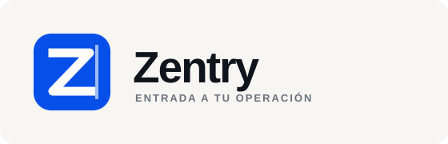
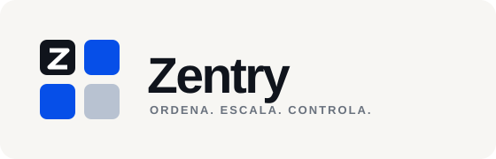

01 · Portal
Una Z que atraviesa una entrada. Directa, tecnológica y fácil de reconocer en tamaños pequeños.
Sistema de identidad · ronda 01
Todos los conceptos funcionan como símbolo de aplicación y como firma horizontal. Compara primero la idea; color, proporción y tipografía se refinan después de elegir una dirección.

Una Z que atraviesa una entrada. Directa, tecnológica y fácil de reconocer en tamaños pequeños.
Representa la plataforma y las empresas alojadas dentro de una misma infraestructura.
Un núcleo conectado con varias operaciones. Tiene una presencia más técnica y corporativa.

Bloques independientes dentro del mismo sistema. Sencilla, ordenada y orientada a producto.